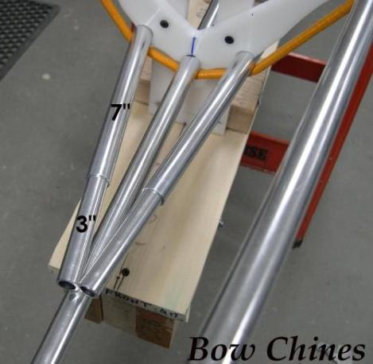

| Stem / Stern Inserts (1 of 5) | Menu Last Page Next Page |
|

Marking And Cutting StringersStern Chines - Cut off the stern chines 13" from cross section 8. Slide in the 12" insert and allow it to extend 5" beyond the 3/4" chine stringer or until there is a 1/2" gap at the ends. Bow Chines - Cut off the bow chines 7" from cross section 1. Slide in a 5/8" X 12" insert and allow it to extend 3" beyond the 3/4" chine stringer or until there is a 1/2" gap at the ends. The gap is the width of the HDPE plate. Gunwales are made in the same way, though tube cutoff dimensions are different. Note: Using inserts at the ends allows easier positioning at the plates. |